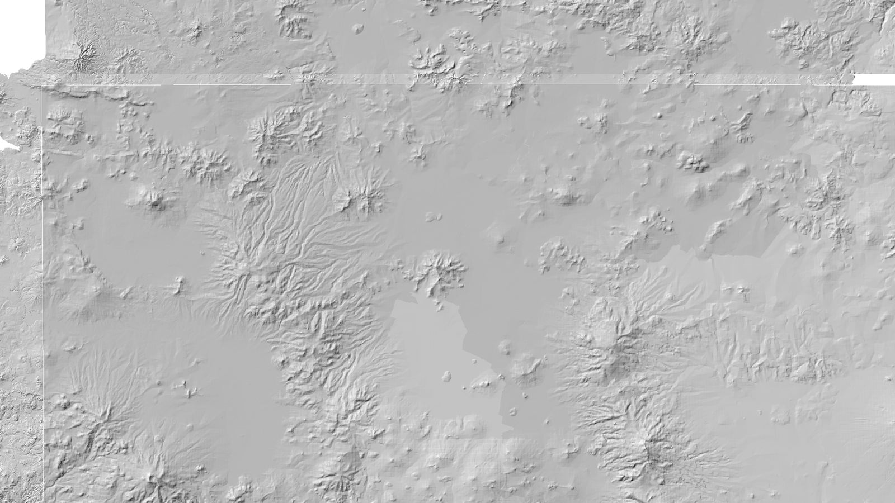
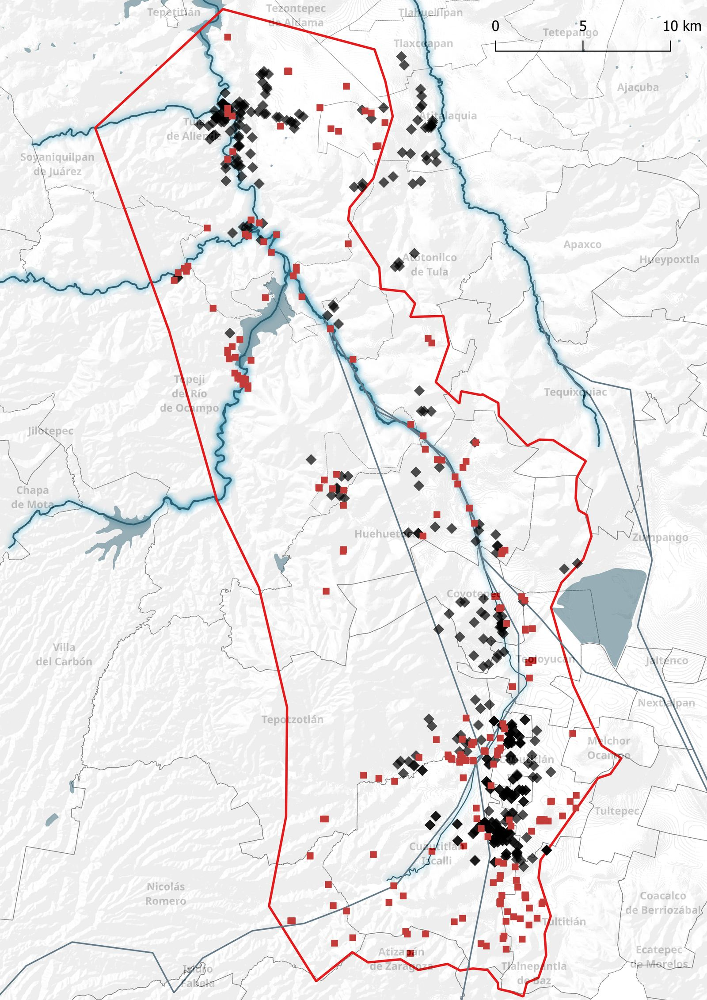
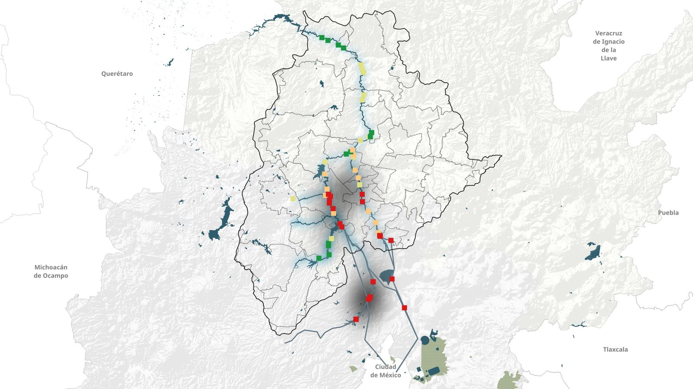
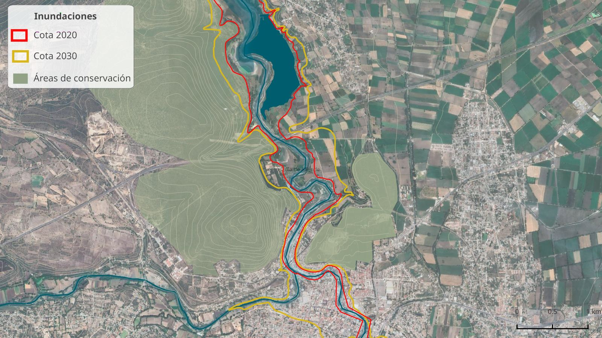
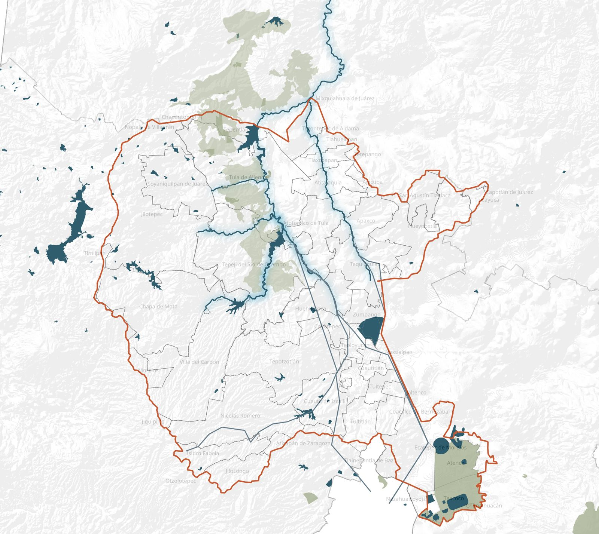
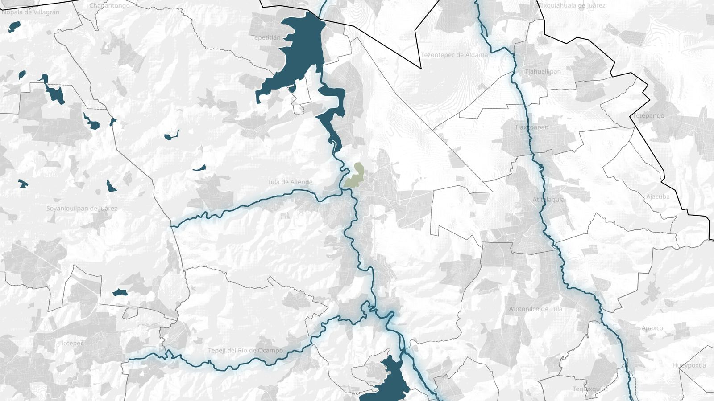

Saneamiento · Restauración · 2024–2030
El camino de recuperación de uno de los ríos más contaminados de México: agua limpia, riberas restauradas y comunidades resilientes.

El río Tula forma parte de la cuenca del Valle de México, uno de los sistemas hidrológicos más alterados del mundo. Durante más de un siglo ha recibido las aguas residuales de la zona metropolitana de la Ciudad de México, transportando contaminantes domésticos e industriales a través de más de 600 km de cuenca.
Esta carga ha convertido al Tula en uno de los ríos con mayor concentración de contaminantes orgánicos e industriales en el país, afectando la salud de comunidades, la biodiversidad ribereña y la capacidad productiva de los suelos irrigados.
La recuperación del río es una deuda histórica con los municipios del Valle del Mezquital y con los ecosistemas que dependieron de él antes de su deterioro.

Los indicadores de calidad del agua en el río Tula muestran concentraciones de DBO hasta 20 veces por encima de los límites permisibles en tramos críticos, con descargas industriales activas y una infraestructura de drenaje que no alcanza a captar la totalidad de los vertimientos.
La erosión de taludes, la pérdida de cobertura vegetal y la irregularidad en la operación de presas han incrementado el riesgo de inundaciones en la ciudad de Tula y municipios aledaños.



El plan abarca el tramo del río Tula desde su cruce con la autopista Chamapa–Lechería hasta la presa Endho, integrando acciones coordinadas con los estados de Hidalgo, México y Ciudad de México, en beneficio de comunidades rurales y urbanas del Valle del Mezquital.

El plan articula acciones de infraestructura, conservación, monitoreo e inspección en una estrategia de largo plazo que integra a múltiples dependencias federales y gobiernos locales.
Visualiza capas de información geográfica, consulta el estado de cada proyecto y filtra por eje temático en el visor interactivo.
Abrir visor de mapa